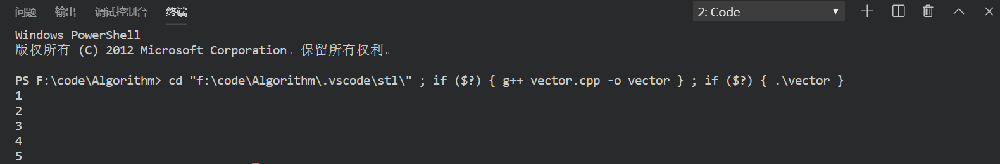

Vector是什么?
vector翻译为向量，从某种角度来说就是一个可以变长的数组，它会根据需要自动扩充数组的容量，除此之外其是一个STL中的模板类,其
还具有一些内部的方法。
Vector的使用方法
1.添加头文件
# include <iostream> # include <vector> using namespace std;
2.定义vector的对象
vector<int> name; vector<double> name;//双精度型 vector <float> name;//浮点数型 vector <char> name;//字符型
vector<vector<int>> name;//类似二维数组
3.访问vector内部元素
1)通过下标访问元素
//通过下标来访问
vector<typename> v;
cout<<v[0]<<endl;2)通过迭代器来访问
迭代器可以理解为类似指针的东西，定义其的方法。
vector<typename> ::iterator it; vector<int>::iterator it; vector<float>::iterator it;
举例
# include <iostream> # include <vector> using namespace std; int main(void) { vector<int> vi; for(int i=1;i<=5;i++) { vi.push_back(i); } //vi.begin()是取vi的首地址，it指向该地址 vector<int>::iterator it=vi.begin(); for(int i=0;i<5;i++) { cout<<*(it+i)<<endl; } }
结果

注意begin()函数返回的是vector数组的首地址，而end()并不是返回尾地址，而是末尾元素的下一个元素的地址。除此之外迭代器还实现了两种自增操作it++和++it
因此使用迭代器遍历的第二种方法。
# include <iostream> # include <vector> using namespace std; int main(void) { vector<int> vi; for(int i=0;i<5;i++) { vi.push_back(i); }
//不支持it<vi.end()的写法 for(vector<int>::iterator it=vi.begin();it!=vi.end();it++) { cout<<*it<<' '<<endl; } return 0; }
4.常用函数的使用
1)push_back()
功能:在vector的末尾后面添加一个元素
# include <iostream> # include <vector> using namespace std; int main(void) { vector<int> vi; for(int i=0;i<5;i++) { vi.push_back(i); } for(int i=0;i<5;i++) { cout<<vi[i]<<' '; } return 0; }
2)pop_back()
vector<int> vi; for(int i=0;i<3;i++) { vi.push_back(i); } //0,1,2 vi.pop_back();//0,1 for(int i=0;i<vi.size();i++) { cout<<vi[i]<<' ';//0,1 }
3)size()
vector<int> vi; int size=vi.size();//返回当前元素数目
4)clear()
vector<int> vi; for(int i=0;i<5;i++) vi.push_back(i);//依次加入0,1,2,3,4 vi.clear();//清空所有元素，size=0
5)insert()
vector<int> vi; for(int i=0;i<5;i++) { vi.push_back(i); } vi.insert(vi.begin()+2,-1);//-1插入vi[2]的位置
6)erase()
vector<int> vi; vi.erase(vi.beigin()+3);//删除单个元素，删除vi[3] vi.erase(vi.beigin()+1,vi.begin()+4);//删除多个元素，删除【first,end】之间的所有元素